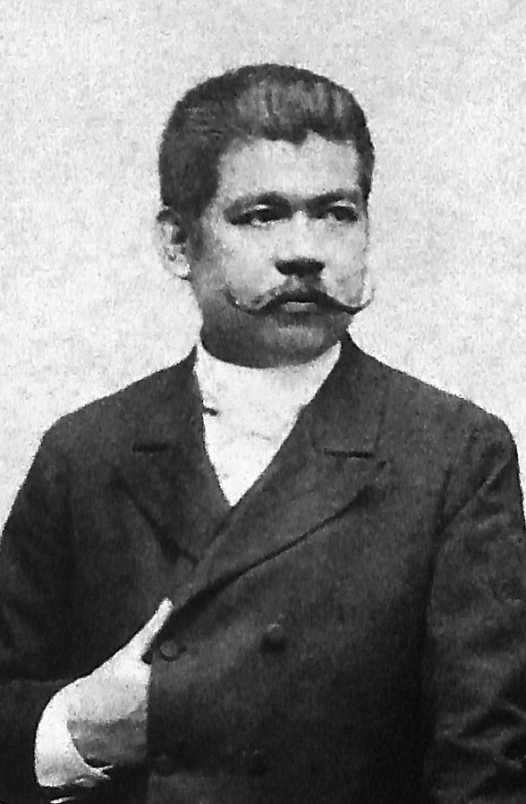
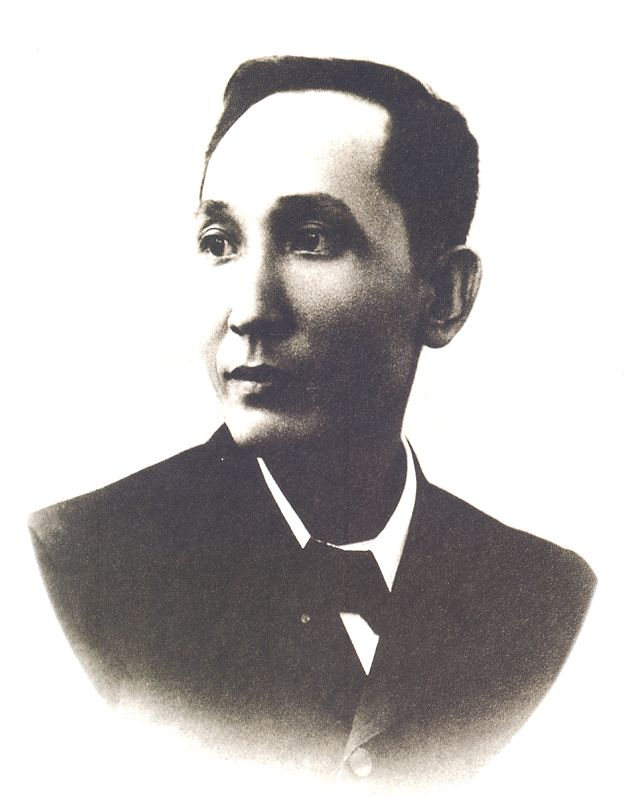

| image | Name or Title | Birthday/death date | Cause of death | Accomplishments | Marital status | Alignment |
|---|---|---|---|---|---|---|

| José Protacio Rizal Mercado y Alonso Realonda or José Rizal | 19 June 1861/30 December 1896 | Execution via firing squad | Political and social reforms(somewhat accomplished) | Common law married to Josephine Bracken | Liberal |
| Emilio Aguinaldo y Famy "Commanding General of the Philippine Revolutionary Army" |
March 22, 1869/February 6, 1964 | Heart attack | Fighting for a free Philippines(accomplished) | Married twice first to Hilaria del Rosaria and second to María Agoncillo | Socialist | |
| Andrés Bonifacio y de Castro | November 30, 1863/ May 10, 1897 | Execution via firing squad | Founded the Katipunan | Married twice first to Monica Bonifacio and second to Gregoria de Jesús | La Liga Filipina Katipunan | |
|  | Marcelo Hilario del Pilar y Gatmaitán | August 30, 1850/July 4, 1896 | Tuberculosis | Exposed the wrongdoings of the friars | Married to Marciana H. del Pilar | Liberal |
|  | Apolinario Mabini y Maranan | July 23, 1864/May 13, 1903 | Cholera | Created the Constitution of the Philippines | Single | La Liga Filipina |